Every page plate mapped to narration.
This is the review layer before generating OpenAI voice audio and assembling the MP4. Each scene is framed as a 16:9 screen, paired with narration, timing, and camera direction. The video should feel like browsing the HTML, but without scrolling.
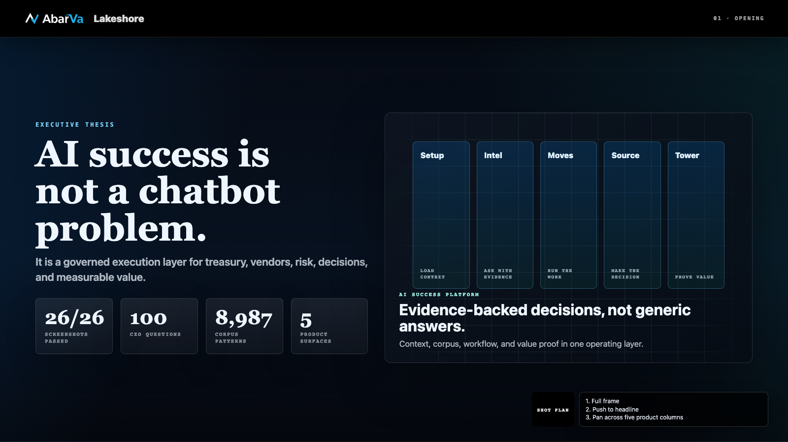
Opening thesis
AI success for Lakeshore is not a chatbot. It is a governed execution layer for treasury, vendors, risk, decisions, and measurable value.
Hold headline, then slow zoom to the "My read" card.
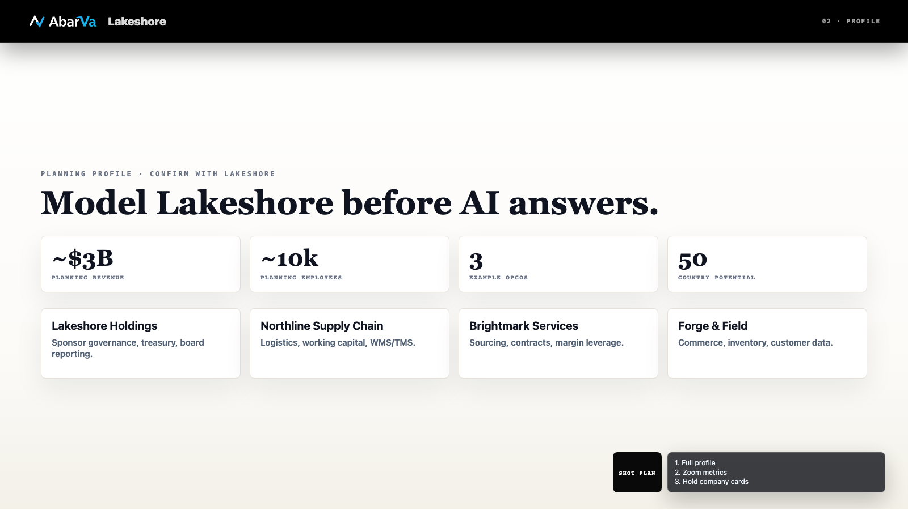
Lakeshore operating profile
Abarva starts with Lakeshore's facts: operating platforms, revenue baseline, people, systems, vendors, banks, and board priorities. Context comes before AI.
Punch in on scale metrics, then the operating-company table.
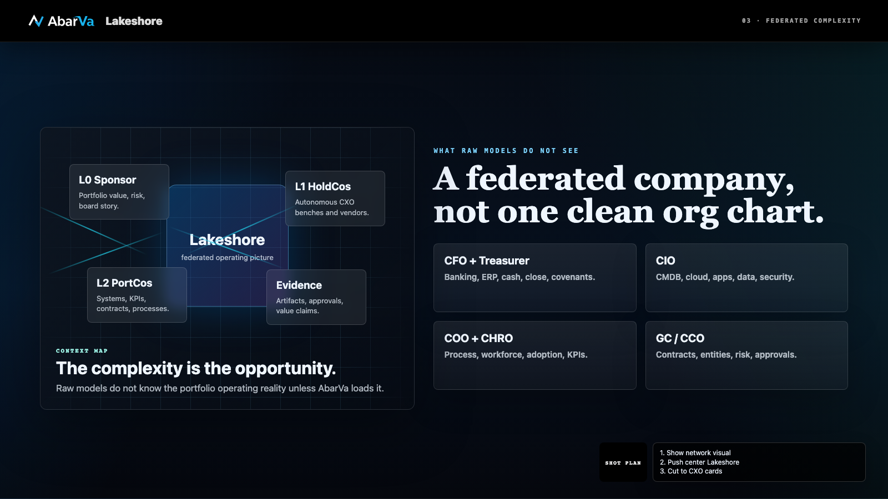
Federated complexity
The complexity is the product opportunity: sponsor decisions, HoldCo autonomy, PortCo systems, CXO ownership, contracts, CMDB, and process evidence.
Pan across L0, L1, L2; pause on CXO bundles.
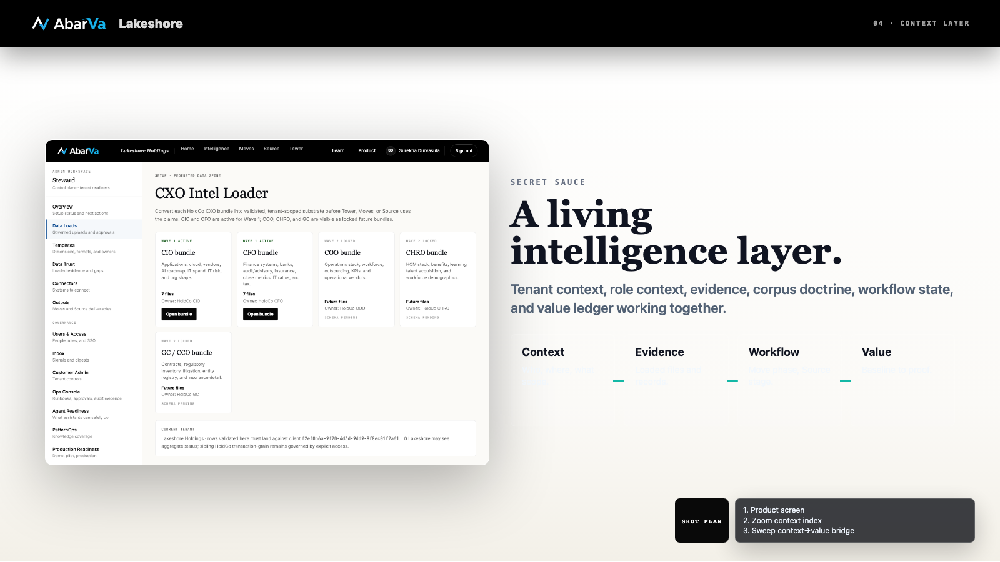
Lakeshore Intelligence Layer
The intelligence layer is the moat: tenant context, role context, evidence, corpus doctrine, workflow state, and value ledger working together.
Push to the Setup/Admin screenshot, then back to the quote.
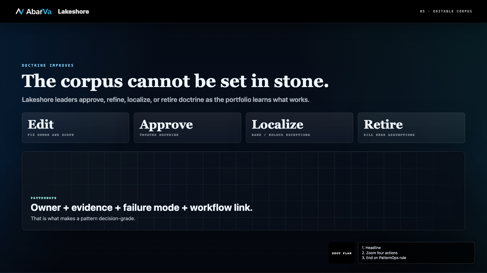
Editable corpus doctrine
The corpus stays editable. Lakeshore leaders approve, refine, localize, or retire doctrine as the portfolio learns what actually works.
Zoom to approve, edit, localize, and retire cards.
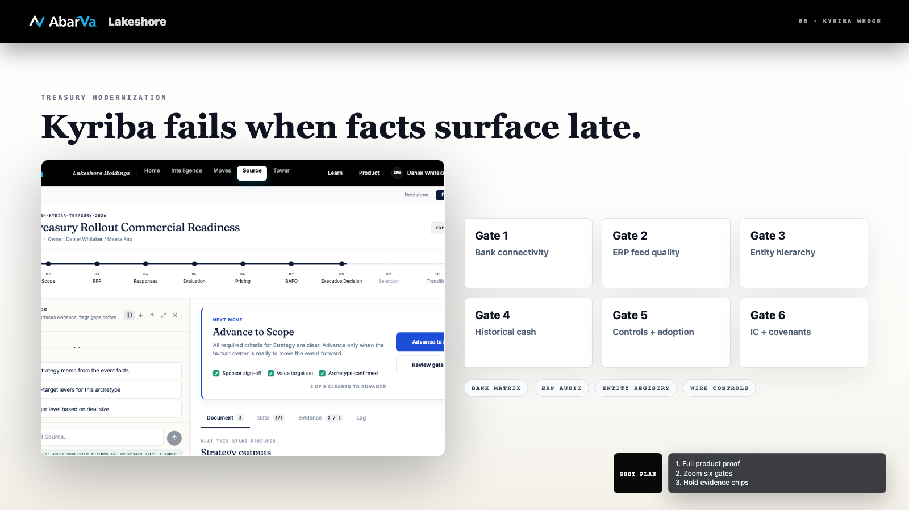
Kyriba and treasury wedge
Kyriba is a treasury management platform for cash visibility, bank connectivity, payments, liquidity, and forecasting. It fails when bank, ERP, entity, cash, control, and adoption facts surface too late. Abarva turns those risks into gates.
Full Kyriba Source screen, then punch to readiness gates.
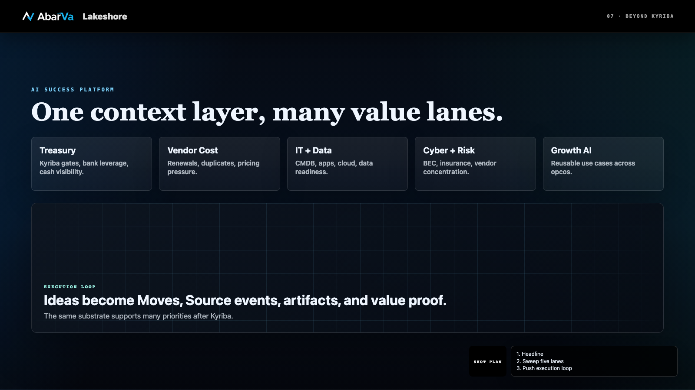
Beyond Kyriba
Kyriba is the opening wedge. The broader platform finds value across treasury, vendors, IT, cyber, operations, and growth AI.
Pan the lanes; highlight Treasury, Vendor Cost, and Growth AI.
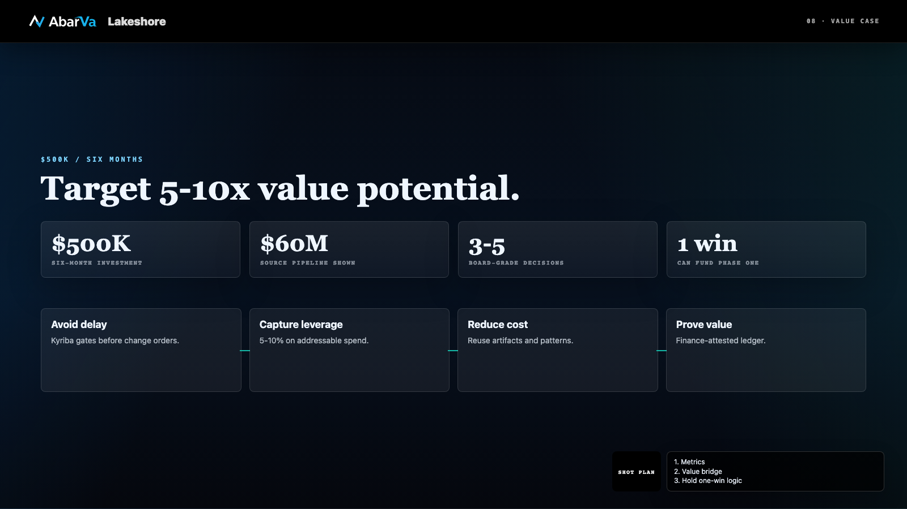
$500K value case
The $500K case is about 5-10x value potential: avoid rollout failure, rationalize vendors, reduce execution cost, and prove savings.
Push to metrics, then sweep Kyriba, vendor, and IT rows.
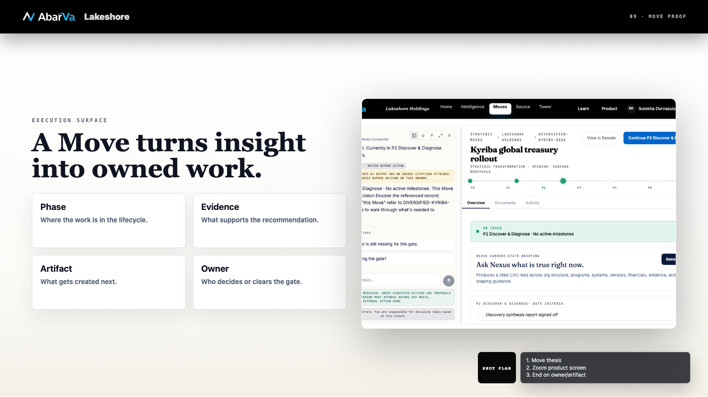
Move execution proof
A Move converts insight into owned work: phase, evidence, value, gaps, artifacts, and a next action.
Punch to the Move screenshot and hold on value evidence.
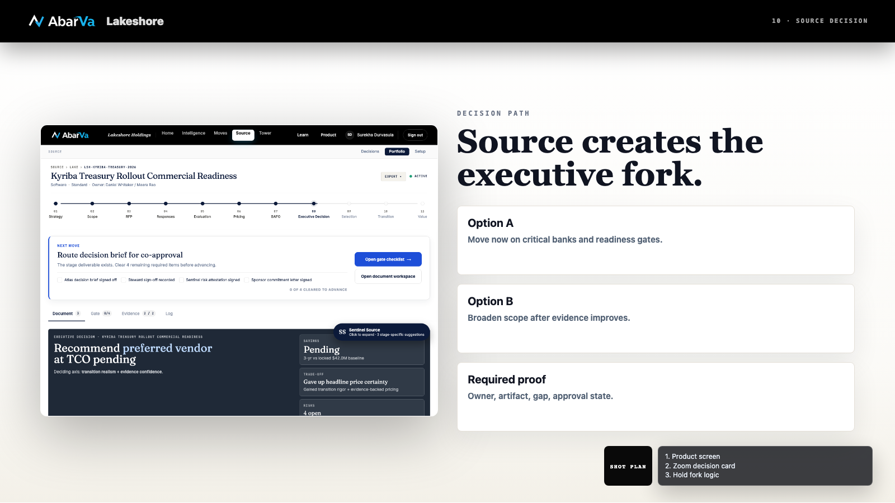
Source decision proof
Source turns finance, procurement, and executive judgment into a decision path with evidence, guardrails, and required artifacts.
Hold Source screenshot; zoom toward the decision card.
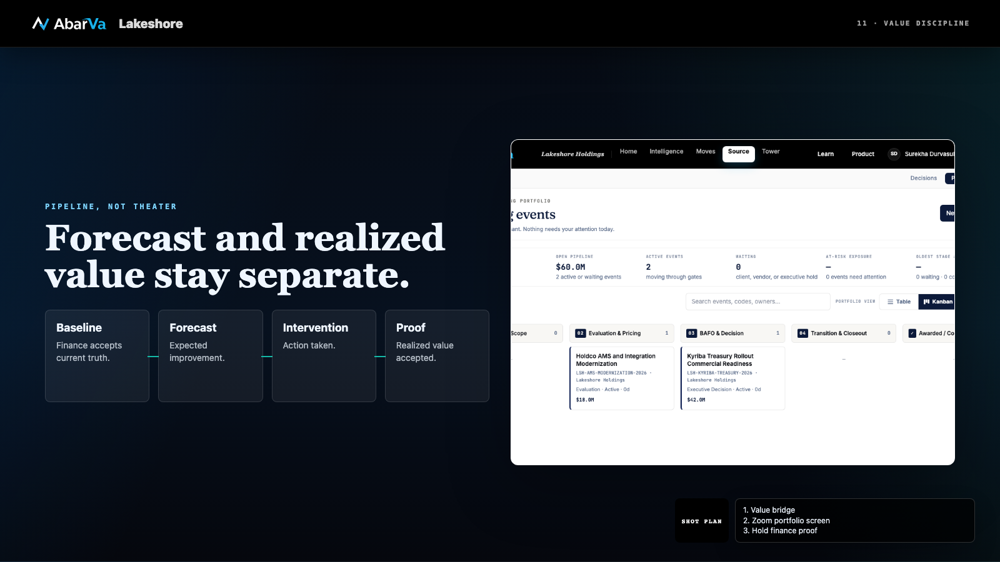
Value pipeline proof
The value story is controlled: forecast, approval, negotiated outcome, and finance-accepted proof stay separate.
Push to the Source Portfolio screenshot and $60M pipeline.
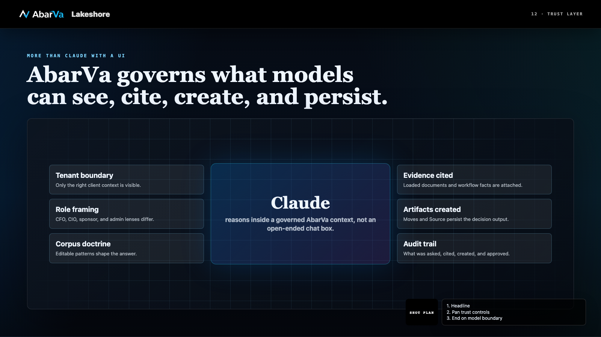
Architecture trust layer
Claude can reason. Abarva governs what it can see, cite, create, and persist for board and audit use.
Zoom into the architecture cards; hold on model boundary.
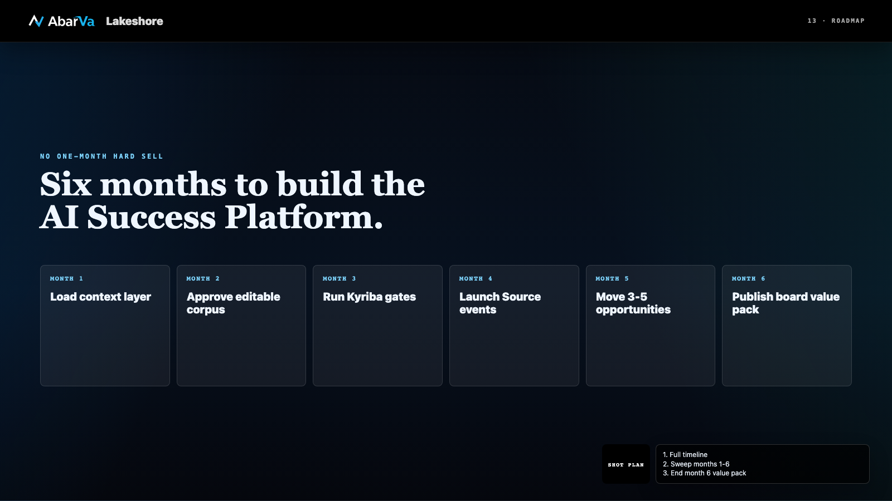
Six-month roadmap
The six-month roadmap builds context, corpus, finance proof, Source events, execution rhythm, and a board-ready value pack.
Sweep left-to-right across Month 1 through Month 6.
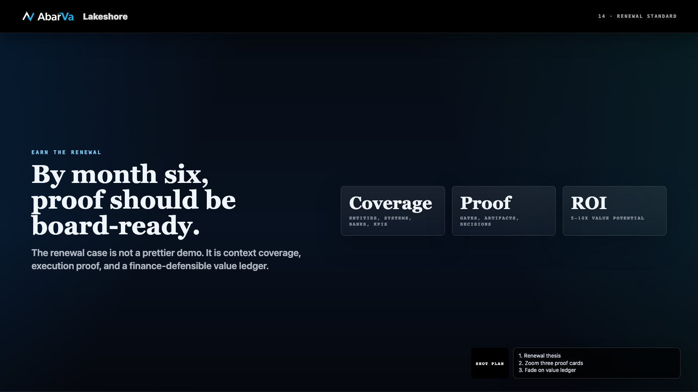
Renewal standard
By month six, the renewal case should be earned: coverage, proof, value pipeline, and a finance-defensible ledger.
Push to the proof cards, then fade out.
MP4 Production Notes
- Use these scene screenshots as the default visual plates. Do not screen-record scrolling.
- Generate one audio file per scene with OpenAI text-to-speech; include AI voice disclosure in the final video description or intro card.
- Assemble with ffmpeg using crossfades or 2-3 second visual transitions between scene beats.
- Use a 10-15% zoom-out base frame, then punch in on active proof areas: metrics, screenshots, value table, roadmap cards.
- Keep narration edits in this storyboard first; audio and MP4 generation should be a separate artifact package.